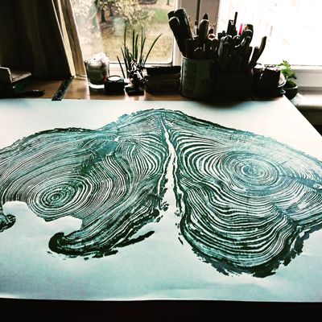

My professional life has always revolved around trees. I have worked planting trees from seeds in a forestry nursery, as a gardener, as a tree surgeon and now I live and work in Scotland as a manager in Arboriculture.
The structures and shapes of wood and the pathogens and conditions that affect and delimit its growth have always had an impact on me. A couple of years ago someone showed me how to make prints with linoleum and oil ink and soon after I started printing woodcuts from trees that were felled at work.
All my work comes from diseased trees or trees with structural imperfections that have to be felled for safety. I rescue the wood from becoming firewood or ending up decomposed on the ground.
In this way, the tree has a chance to leave a mark after its physical body has disappeared allowing us to appreciate its life history and the beauty within wood growth.  The engraving occurs thanks to the difference in density of the wood that grows in the rings during spring and fall. In the warmer months, the rings grow fast accumulating nutrients and the growth slows down in the months with reduced sun hours (although evergreens' growth is slightly different and so are their wood's properties). This affects the hardness of the rings.
The engraving occurs thanks to the difference in density of the wood that grows in the rings during spring and fall. In the warmer months, the rings grow fast accumulating nutrients and the growth slows down in the months with reduced sun hours (although evergreens' growth is slightly different and so are their wood's properties). This affects the hardness of the rings.
Then burning the surface and removing the soft parts with a steel or copper brush. The harder parts remain elevated and thus I can use traditional relief printing techniques to transfer the ink on to the paper.
As well as potentially being great as decoration, my reproductions tell us the story of the tree. You can see the details of pathologies, age, the years with good growth and those that lacked water or sunlight, see the imprint that physical objects left in the trunk when the tree grew over them, the formation and physiology of wood structures such as branches and many other details.
My technique can be used to preserve the memory of a particular tree that has a special value and for some reason has to be felled as it has reached the end of its life. My prints are organic and I couldn't make two exactly the same if I wanted to. Each print is unique and slightly different even if there are several based on the same piece of wood. My editions are open and the colours and type of paper can be modified to suit individual taste. Special editions can be created on request.
Thank you for taking the time to look at my work.